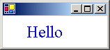

Практическое руководство. Рисование текста в указанной позиции
При выполнении пользовательского рисования можно рисовать текст в одной строке по горизонтали, начиная с указанной точки. Таким образом можно рисовать текст с помощью DrawString перегруженным методом Graphics класс, принимающий Point или PointF параметра. DrawString Также требует Brush и Font
Можно также использовать DrawText перегруженным методом TextRenderer , принимающий Point. DrawText также требуется Color и Font.
На следующем рисунке показан вывод текста, рисуемого в заданной точке при использовании DrawString перегруженный метод.

Рисование линии текста с помощью GDI +
Используйте DrawString , передавая текст, Point или PointF, Font, и Brush.
using (Font font1 = new Font("Times New Roman", 24, FontStyle.Bold, GraphicsUnit.Pixel)){ PointF pointF1 = new PointF(30, 10); e.Graphics.DrawString("Hello", font1, Brushes.Blue, pointF1); }
Рисование линии текста с использованием GDI
Используйте DrawText , передавая текст, Point, Font, и Color.
using (Font font = new Font("Times New Roman", 24, FontStyle.Bold, GraphicsUnit.Pixel)) { Point point1 = new Point(30, 10); TextRenderer.DrawText(e.Graphics, "Hello", font, point1, Color.Blue); }
Компиляция кода
Для работы предыдущих примеров:
- PaintEventArgs
e, который является параметром PaintEventHandler.